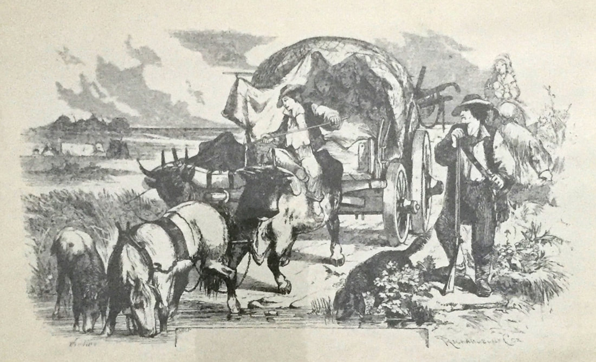
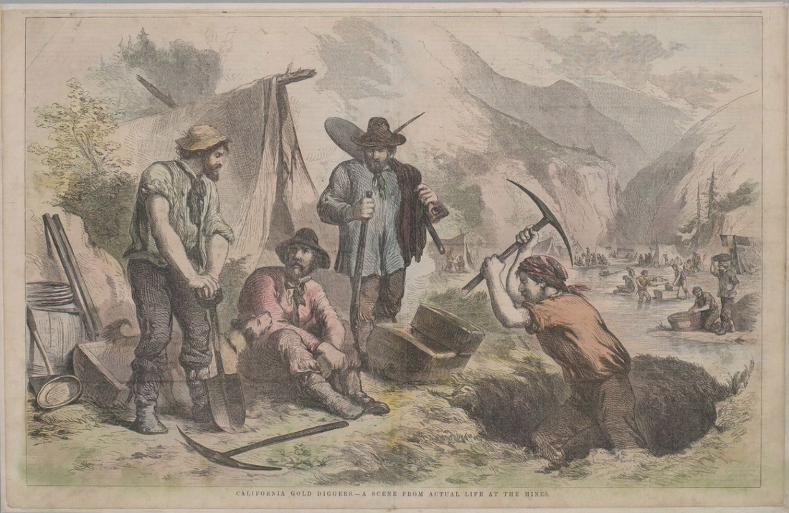
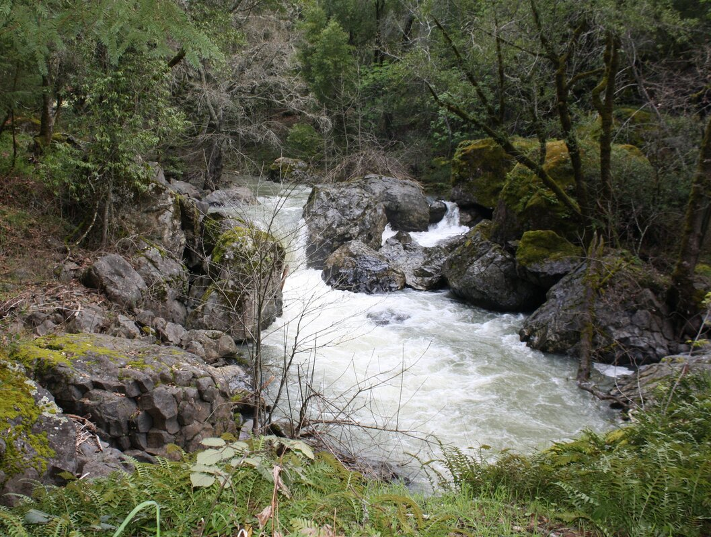
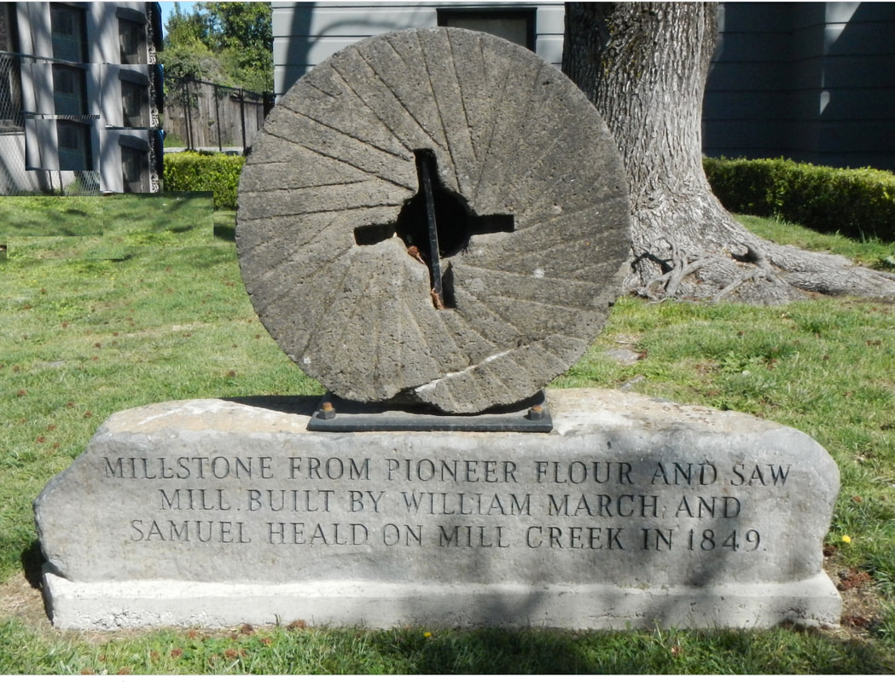
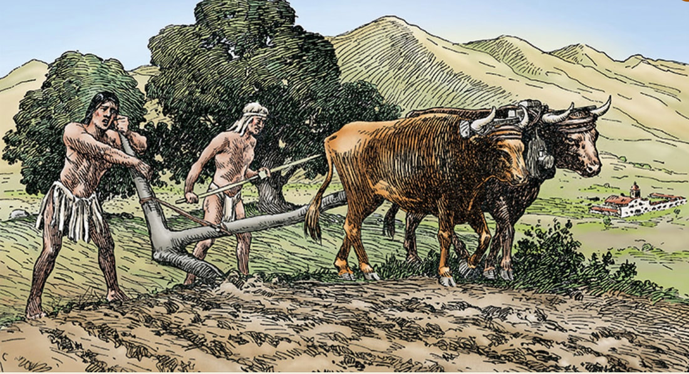

The Heald Family and the Birth of a Town
© 2020 Hannah Clayborn All Rights Reserved
|


Harmon Heald was raised in log houses like this one on the Ohio and Missouri frontier. Elizabeth Kitchen Log House, c. 1824, Ohio.
|

Interior Elizabeth Kitchen Log House, c. 1824, Ohio
|
|
 engraving from The Overland Trail, by Herbert Eaton, 1974. Watering holes and streams were quickly contaminated on the Overland routes.Heald Boys Head West
When news of the gold discovery reached Missouri in 1849, Harmon and Thomas immediately made plans to head for California with two neighbors, Samuel Philpott and Daniel Darby. They managed to get together an outfit of three or four yoke of oxen, a wagon, and two saddle horses, departing in early May. From the very beginning their oldest brother, Samuel, who made his living building sawmills, did his very best to dissuade them. He rode along with them for two days making appeals for their return. Finally giving up, Samuel turned his horse back toward the Missouri farm. On his way home he met yet another neighbor who was on his way to California. This neighbor managed to persuade even the reluctant Samuel, for without returning to say goodbye to his mother or grab a change of clothing, he rode quickly to catch up with his brothers. The party of five joined several more neighbors (Marion Gibson and James and Jonathan Capell) as prearranged, and this combined company rode just behind a larger train of 22 wagons. Then cholera began to claim its victims, first one, then another. Like so many unfortunates on the emigrant trail, Jonathan Capell's stomach began to cramp one day before breakfast. He was dead before lunch. The Healds and their friends soon joined the larger train to have access to its two doctors. As it turned out, the doctors on the wagon train were of little use to the Healds. Both Harmon and Samuel struggled through bouts with typhoid on the trail. Samuel was even left behind by these company doctors as a hopeless case in Oregon. Later an army surgeon who happened to be camped with government troops in the same valley, advised the Healds. According to Thomas Heald's account, the army doctor, ordered that we discontinue the medicine we were giving and to rub well with alcohol. We followed his instructions and my brother improved so that in eight or ten days we were able to travel.(4) The terrible triplets of the California, Santa Fe, and Oregon Trails--cholera, typhoid, and dysentery--were caused by poor sanitation and contaminated drinking water and food. The once pristine frontier creeks and streams became toxic brews of feces-tainted water. Makeshift grave markers served as chilling signposts to mark the way for successive waves of travelers. The alcohol cure described above may have simply kept Samuel from reinfecting himself while he fought off the initial infection. After surviving typhoid, Harmon had become badly afflicted with scurvy by the time they reached Sacramento in September of 1849. A disease usually associated with sailors, and caused by a lack of vitamin C, scurvy was a consequence of a diet necessarily long on protein (fresh game), and lack of fruit and vegetables. Neither Samuel nor Harmon was strong enough to withstand the rigors of gold mining. The Heald brothers sold off their wagon and oxen to a man in Napa County named Kellogg, who was also kind enough to take a weak Samuel in for the winter. Philpott set off to spend the winter with his sister, Mrs. Patton, living in Sonoma, and took the ailing Harmon along with him . When spring arrived Philpott and Harmon Heald set out to join Thomas Heald, who was now established as a miner on Deer Creek. There they learned that Thomas had buried Daniel Darby, a member of the original party, claimed by typhoid during the winter. Although the site on Deer Creek would later yield fortunes in gold and become known as Nevada City, the Heald party, relying on rumors of better diggings, set off for the northern part of the Yuba River. They reached it by mid-April, 1850. The survivors of the original Heald party found an isolated encampment on the Yuba River that was dangerously low on provisions. They sold one of their 75-pound sacks of flour for $112.50. Working a claim a short distance above Goodyear's Bar near Downieville, the trio judged it exhausted by September. They sold their claims and tools and headed for the town of Sonoma.  California gold diggers, a scene from actual life at the mines (UCB Bancroft LIbrary)
Millwright’s Wages Better than Gold
Samuel Philpott soon gave up his California adventure and returned to Missouri. But Thomas and Harmon Heald learned that their brother, Samuel, now recovered, was up on the Russian River, hired to build a combination lumber and flour mill for William J. March.(5) This mill, the first lumber mill in northeastern Sonoma County, was built on the Upper Falls of Mill Creek (near the current Felta Road, just above the historic residence built by Perry Mothorn). Throughout the disruptive years of war between Mexico and the United States, March had been unable to find anyone to build his mill. Hearing that an experienced millwright from Missouri was recuperating in Napa, he offered Samuel the position at the relatively luxurious wage of $9 a day, which was more than most were making at gold mining. The millstone was put in operation in September 1850.(6) That millstone is now at the Healdsburg Museum. An English adventurer, Frank Marryat, found March (a tall, sinewy Missourian) and the Heald brothers at their backwoodsman's hut in the late summer of 1850. Marryat marveled at that mill, a glorious instance of what energy will accomplish, and the rapidity with which each man in an American colony contributes toward the development of the new country's resources. March and the Heald brothers, against a backdrop of gargantuan redwoods, lived entirely on game, Marryat reported.(7) By November of 1850 that mill employed six other would-be gold miners as well.(8) With his wages and money loaned by his brothers, Samuel Heald soon bought an interest in March's mill. Thomas Heald became manager of operations.(9) |
|
 Mill Creek Falls, site of William March and Samuel Heald's combination flour and lumber mill in 1850 (CrabTree13).
|
 Original millstone put into operation in September 1850 at the March & Heald Mill on the upper falls of Mill Creek. It was retrieved from that location many years ago by the late Perry Beeson, and is now at the Healdsburg Museum.
|
 Harmon Heald's first cabin may have looked like the one built by Elisha Ely near Geyserville, in the same year, 1851. The March & Heald sawmill would have provided cut redwood planks. ( Downing, Healdsburg Museum) Harmon Heald's first cabin may have looked like the one built by Elisha Ely near Geyserville, in the same year, 1851. The March & Heald sawmill would have provided cut redwood planks. ( Downing, Healdsburg Museum)
Heald’s Sanitarium
Although Harmon was still recovering from the effects of scurvy, the Heald brothers were so optimistic about the opportunities on the Russian River that they dispatched Samuel to return to Missouri to bring out the rest of the family. Samuel began his journey via ship through Panama in January 1851, and returned by wagon overland that same autumn. He brought with him his mother, Elizabeth, his brothers George and Jacob, Jacob's wife and child, his sister, Sarah, and his niece Mary.(10) During Samuel's absence Harmon found a pleasant, sun-dappled site nearby at the edge of parklike oak and madrone forest. It is understood that the selection of the site was made altogether with the view of recovering his failing health, recalled a later family chronicler. He built his personal sanitarium, a small squatter's cabin, on the side of the main road to Mendocino and the counties to the north, then the only artery for wagon travel in this part of Sonoma County. That site, legally part of the Sotoyome Rancho land grant, owned by the Fitch family, later became the 300 block of Healdsburg Avenue.(11) It has often been recorded that in 1852 Harmon built a small addition to his cabin and stocked it with goods that he sold to the Indians and new settlers in the vicinity. His youngest brother, George, newly arrived from Missouri, helped him in the store. This became the magnet and nucleus of the later town of Healdsburg. What is not often recounted is how Harmon apparently made the money to buy that first stock of goods. In 1851 he cleared away ten acres of land and planted wheat. The virgin soil yielded a splendid crop, which he sold at 8 cents a pound. Given the frail physical condition of Heald at this time, he, like most early settlers in the region, undoubtedly used native labor to sow, tend, and harvest this grain. An 1852 California census shows at least 100 Indians living in the vicinity of the cabin and 80 more at the Piña's rancho in Dry Creek Valley These would likely be southern Pomo groups closely related to the Mihilakawna and Makahmo tribelets in Dry Creek Valley. Heald may even have paid the Indians wages, for it was reported that the Indians later bought goods from Heald’s Store with cash. Heald was not grateful for the Native American efforts that enriched him, for once other labor was available, in 1856, he was quoted along with other settlers, advising the removal of the native populations: H. G. Heald of Russian river, Mendocino county, August 26, 1856, says: "They are generally indolent, and appear to care very little for property. They live in rancherias of from 20 to 50, or more, and subsist upon seeds, fish and game, &c. The men work occasionally for the farmers, and receive about fifty cents per day. They are very poor, and are frequently going about the neighborhood almost naked. I think it would be well for the department to remove them to some reservation where they could be made to earn their living.(12) For a short while the native population far outnumbered the white settlers and Heald’s little redwood trading post stood alone under those ancient oak and madrones.  Heald may have paid Indian laborers in cash, which they spent buying provisions at his store. This illustration shows laborers near Mission San Luis Rey. Drawing by Fr. Zephyrin Engelhardt, The Missions and Missionaries of California, 1908–1913.
Flurry of Newcomers
The next few years brought a flurry of events that are sometimes difficult to sequence. H. M. Willson, who settled just to the southwest of Heald's Store in June of 1852, later recalled that he waded across the Russian River near the current highway bridge when he first arrived. He found Mr. Heald's store already in operation. Thomas Wade Hudson, a boyhood friend of Harmon's from Missouri, along with his wife Martha (Shaw) and baby son David, boarded with Harmon when they first arrived and helped him in the store, The Hudson family later settled on their own farm just south of the town site on the west bank of Russian River, where he ran a ferry with John Grant, who owned land on the west bank. Early Dry Creek settler, Burk Miles, remembered hauling what he thought was the first load of goods to Heald's store by wagon in October 1852.(13) By the following spring Heald needed an even larger stock of goods, which he had shipped from San Francisco by steamer and wagon. Settlers, or more correctly squatters, continued to arrive, but Harmon Heald's small stock of goods could not always supply them. Mrs. Jennie Brumfield Strong's family arrived just before the early and very hard winter of 1852-53. She remembered that the Brumfields almost starved that year. Harrison Barnes and Bill Potter had put up a little store on the banks of the Russian River, a few miles southwest of Healdsburg, but the high water picked the shanty up and carried it downstream. After that the closest flour was in Petaluma, and that at $18 a sack. During the winter of 1853-54 Heald built an addition to his store. He was joined by a man named Morse who opened a blacksmith shop. Soon William Dodge and William Dow, who moved their blacksmith operation from the Russian River, bought out that shop. August Knaack, a German wagon wright, built the third commercial building. His shop adjoined the blacksmith shop and provided all the wooden parts for items made there. Knaack also made chairs and repaired wagons. These pioneer businesses were all built on the west side of the current Healdsburg Avenue adjacent to and running north of the Plaza in the general vicinity of the current Swenson Building (331–349 Healdsburg Avenue). A Funeral, a Wedding, and Two New Babies
The first funeral and the first wedding in the settlement known as Heald's Store, both took place in 1853. Harmon's younger brother, George, who had worked in the store, died on January 22, 1853. Harmon married Sarah J. Smith, daughter of I.C. Smith near Mark West Creek on May 10, 1853. Sarah was born May 7, 1830 in Washington, Rappahannock County, Virginia. Thomas W. Hudson and his wife Martha had a second son whom they named Henry Harmon Hudson on March 10, 1854. Henry was the first of the Anglo-European settlers born in what would soon become Healdsburg. According to his older brother, David Wade Hudson, in a letter published in the Russian River Flag August 28, 1879: ...Harmon G. Heald and family were, of coarse, the pioneers, and their son William is still here, or rather does business here. In 1852 T. W. Hudson did live in Healdsburg, occupying tho rear of Heald’s store, and the very building now remains and is in the rear of Love Bros., express and telegraph office. Your humble servant[meaning himself], their oldest son, came with them, and Henry, next youngest, born in ’54, was the first white child born here; Wm. Heald is one week younger. H. M.Willson kept store in town in 1853 and A. B. Aull was here at that time. Yours Resp, D. W. Hudson. Aull was married to one of Sarah Smith Heald's sisters. William (Billy) Heald, born August 19, 1854, was the second settler child born in town. His biography is included at the end of this article, In 1854 a post office opened in Heald's Store, run as a private enterprise with most letters costing the exorbitant price of 25 cents to post.(14) Although settlers continued to arrive and settle in the surrounding countryside, and houses began to be erected in the current downtown area, the nucleus of the store, blacksmith, and wagon wright's shop had no other name than Heald's Store. According to one account the village itself was designated Stringtown, just one of several hamlets strung along the road to the northern counties.(15) |

Healdsburg Enterprise, Volume III, Number 14, 9 May 1878
|
The Location of Heald's Store Prominent Squatter
Harmon Heald rapidly gained prominence and wealth. Elected to the Sonoma County Board of Supervisors in 1854, he won a close election to the California State Legislature the very next year. His opponent in the latter race was Lindsay Carson, brother of the famous "Kit" Carson. By late 1855 Harmon had two sons, George William and Harmon C.(16) From the very beginning Harmon Heald knew that he was squatting on the Rancho Sotoyome land grant, all 48,800 acres of which belonged to Josefa Carrillo de Fitch, widow of Captain H.D. Fitch, and her children. Heald reportedly opted to remain there illegally, awaiting the court's decision on the validity of the grant. After Captain Fitch's death in 1849, Josefa and her children moved from San Diego to live on the Sotoyome. They were helpless to eject the squatters who now overran their property. Although the validity of the Fitch grant was finally confirmed in 1855, a series of forced land auctions in April and May of 1856, ostensibly initiated by Josefa Fitch to pay land taxes, was the opportunity that Heald and other squatters had been waiting for.(17) The plot of land that Harmon Heald actually purchased at auction was not the town site. He purchased 100 acres between the old Healdsburg slough and Dry Creek for $200. In July of that year, however, he purchased 10 more acres on the east side of the slough from his brother-in-law, Aquilla B. Aull. In December he purchased another tract from another brother-in-law, George T. Espy, 55 acres extending south to the current Mill Creek Road. Both Aull and Espy had purchased their plots at the 1856 land auctions, and it is on these tracts that the town named Healdsburg was mapped and recorded on March 5, 1857. Another, almost identical plat, was filed by Heald on August 10. Heald's first plat of the town showed 55 lots; his second showed 85, but the size and location of the original lots were identical. Initially lots were offered at $15 a piece, but the price of prime commercial sites soon shot up. One year later Heald sold a lot near his store for $458. Sixty-eight of the original lots were sold within the first two years. 
Subdivision Map of Healdsburg, 1857
Planning for a Town
As already described, a number of businesses and dwellings had gone up before the official naming and surveying of the town. Unlike some land speculators that would come after him, Heald generally made these lots available to their prior occupants at the base price of $15 a piece. Not all of the original lots were put up for sale. Heald gifted deeds to certain lots or transferred them for an honorary amount. These included lots for the town plaza, the old cemetery (now St. John’s School), two lots for schools, and four lots for Healdsburg's first churches.(18) These donations allowed the fledgling institutions, and therefore the town itself, to change from a Stringtown to a place where families could settle without the stigma and uncertainty of squatting. In the same year that the town was christened, Heald built a larger store on the lot that now forms the northeast corner of Healdsburg Avenue and Plaza Streets. Here, we are told, he opened an establishment of some pretensions that was managed and operated by his friend H.M. Willson. But new evidence indicates that even as Harmon Heald laid out the town and built a larger store, his health was failing. An advertisement, dated March 26, 1857, offers his store for sale along with all its stock of goods, citing failing health as the reason. The next year, 1858, Harmon's brother Jacob and John Raney completed a hotel named the Sotoyome House, and a man named Rathburn built the first brick commercial building, all on the 300 block of Healdsburg Avenue. Just one year later, in 1859, a disastrous fire swept away all or most of the wooden buildings just mentioned, including a saloon with a dance hall above it. Rathburn's pioneer brick building finally stopped the spread of the flames. The year of the fire also brought the opening of the first public school (a private academy had been built the year before), and already no fewer than three churches stood white and righteous around the plaza. Only eight years after Heald built his first little cabin in an oak and madrone forest, there were 120 houses in the vicinity, a volunteer fire brigade, a concert hall, and a population in excess of 500.(19) By that time Harmon Heald was not among them. Titled Madrona Tree, this photo, published by Lawrence and Houseworth, was taken on their way to visit the Geysers in about 1864. This once-celebrated tree had survived a devastating fire in 1859, which charred and hollowed it. To the right of the tree is the second store of some pretensions that Harmon Heald built in 1857 on the northeast corner of Plaza and West St. (Healdsburg Ave.), first operated by his friend, H.M. Willson. and then Sondheimer and Engle. By 1864, the building was known as the Sam Meyer Block. (Society of California Pioneers).  This Heald portrait was published 19 years after his death, in Thompson's 1877 Historical and Descriptive Sketch ( p. 92). The signature is probably authentically reproduced. This Heald portrait was published 19 years after his death, in Thompson's 1877 Historical and Descriptive Sketch ( p. 92). The signature is probably authentically reproduced.
A Spiritual Being
Commercial and civic growth creates an almost irresistible kineticism for historians. Because they are easily recorded, all those firsts—-first store, first house, first church—become the main story as Healdsburg grows from a hamlet to a village, from a village to a town with a name in 1857, and 10 years later to an incorporated city. Intangible and mostly unrecorded is the purely human, emotional dimension that not only accompanied this commercial boom, but at least for its founder, must have overshadowed it. As Harmon Heald, sick himself with relentless tuberculosis, stood beside his wife's coffin in the new plaza on that day in May 1857, he was probably not plotting his next commercial venture. Others had already taken over most of the financial and business affairs of this man who had always been noted for his straightforward neighborliness. Two months later Heald would sell out his new enlarged store to Emanuel Sondheimer, (born Germany c. 1826) and Henry S. Engle (born Hungary, c. 1825), who had profited as grain merchants in the vicinity.(20) His younger brother Thomas would act as his agent in the continuing flurry of lot sales in the new subdivision. According to the founder's nephew, W.T. Heald, Harmon did not name the town after himself, his fellow townsfolk did. In contrast to the many transient rowdies and gamblers who drifted through such frontier settlements, …the perfectly clean, upright, beneficent character of Harmon Heald stood out as a light in a dark place. Of broad sympathies, he was a friend, companion and counselor of all. His example far above reproach, was an attraction to both old and young. His bearing and manners always invited conversation, and consequently he was a much known man. Everything that he said was elevating, and his spirit was uplifting. Mr. [Henry] Ferguson tells us that to him he seemed more a spiritual being than a natural one...When most men would have been downcast and peevish, Harmon Heald was cheerful, entertaining, hopeful both for himself and others, and ever solicitous for their welfare. After Sarah's death Harmon went to live with his wife's sister and her husband, George Espy, near Healdsburg. His two young sons were probably in the care of his wife's mother and brother, Ann and Thomas Smith (Smyth), who also lived nearby. George Espy was apparently very devoted to Harmon, and as his illness progressed, Espy took him to every place in the vicinity that had any note as a health restoring locality. Henry Ferguson remembered a church camp meeting on a lagoon in the autumn of 1858. Harmon Heald, now unable even to stand on his own, was brought on a cot. Despite his weakness, Ferguson reported, Heald maintained a lively interest in visiting with all of his old friends. As winter came, Harmon's younger son and namesake, just three years old, became ill with one of those merciless diseases that annually swept through town. He died on December 7, 1858. Harmon followed 10 days later. He was 34. The epitaph on his gravestone reads: You’ll not live always, now welcome the lamb as Jesus hath lain. Dread not the glooming. There, sweet being rest till he bid me rise, to hail him triumph descending the skies. I shall be satisfied when I awake in thy likeness. Charles Fitch, who was then 16 years old, remembered whistling merrily as he galloped into Healdsburg to buy groceries on December 18, 1857. Suddenly he was stopped by a neighbor who informed him that the founder had died the day before. His whistling soon trailed to silence as he found the town as still as death.(21) That silence measured the respect the townsfolk had for Harmon Heald. But no town in northern California in those heady, booming years after the Gold Rush, could remain silent for long. Epilogue
Billy Heald Harmon Heald's only surviving child, George William Heald, was only four years old at the time of his father's death. He was raised by his uncle, Thomas U. Smith, on Mark West Creek, and later at a ranch near Ukiah. The makeup of the Smith household illustrates the disturbing toll that disease took on these pioneer families. When "Billy" Heald was 14 his uncle Thomas married a widow with two children of her own. Later they took in two more orphans, a niece and a nephew, children of A.B. Aull. George William Heald (always known as Billy) was educated at Pacific Methodist College, first in Vacaville, then in Santa Rosa. His aunt Jennie Smith remembered that the orphaned youth had a monthly allowance that exceeded $50 per month (an extravagant amount at the time) while at school. All of his clothes were hand tailored, and when home from school on vacations, he demanded a freshly laundered shirt every day. On his 21st birthday Billy received $50,000 as the proceeds of his father's estate. An almost eerie pattern of mortality followed Harmon Heald's descendants down through three generations. His son Billy later married Berta D. Harrison in 1877, and had two children, running a fine ranch near Ukiah, where he raised horses. While out in the mountains of Mendocino County looking after his timberlands he suddenly contracted pneumonia during a raging storm. According to one account...In order to reach medical assistance he had to be hauled a long distance in inclement weather. The strain proved to be too much for his constitution and although he lingered several months, he did not recover from the illness. He died at his home several months later, on March 9, 1889. He was 34 years old. His oldest child, a daughter, had died in infancy. That left only one surviving son, Harmon Wilfred Heald, born in 1879. Harmon W. Heald grew up and married Florence Cranston of San Francisco (a relative of Senator Cranston). They had two children, a daughter and a son. Florence died two months after giving birth to her son in February, 1908, at the age of 30. Her husband followed her into the grave three months later, at the age of 28. Their firstborn daughter, Jessie, was taken by meningitis in December of that year, leaving just one surviving son, Harmon Cranston Heald.(22) Harmon Cranston Heald finally broke the pattern by living a long life in Alameda. He worked for United Airlines. Married in 1935, Harmon C. Heald had one daughter, Patricia Heald Stevens. Sarah Heald Shaw Harmon Heald never lived to see the town he started grow to a respectable incorporated city, but several of his siblings prospered in and around Sonoma County. Although she was approaching her thirties when she arrived in Healdsburg. Harmon's only sister, Sarah, born in Ohio November 5, 1822, may have had a prearranged marriage planned with Thomas A. Shaw, or if not, then they enjoyed a whirlwind courtship. Shortly after she arrived from Missouri in April 1852, they married on April 28, 1852 (filed and recorded May 12, 1852). Thomas purchased the ranch from George Heald in that year on the Russian River that later became known as the Hobson Ranch. After several moves the Shaw family finally settled near Cloverdale. Sarah died at the age of 86, on May 5, 1909. Sarah's beautiful dowry quilt, made with her friends in Ohio, and brought overland first to Missouri and then California, is in the collection of the Healdsburg Museum. Samuel Heald
Samuel Heald, the eldest of the brothers who came to California, was born in Ohio September 5, 1818. He built a house near his mill on Mill Creek. He returned to Missouri to retrieve the rest of his family in 1851, and they lived with him in the vicinity of the mill until the summer of 1852. Harmon had already established himself near the current Healdsburg Plaza, and three other brothers, Thomas, Jacob, and George, settled on preempted land or land "purchased" from squatters in the vicinity. Samuel ran the mill alone for three years until 1854, when he returned to Missouri to find a bride. Although married previously when he lived in Missouri, his wife had died there in childbirth. He now returned to marry one of her sisters, Martha Cobb. After a long honeymoon spent traveling across the United States they returned to California. Samuel went on to build an early flour mill in Napa, then moved to San Jose. When he also contracted tuberculosis he returned to Cloverdale to live with his sister, Sarah Heald Shaw. He died there August 1, 1874 at the age of 56. He and Martha had two children, Sarah Matilda Heald Saviers (1855–1940), and Thomas Cobb Heald (1857–1943). Neither Sarah nor Thomas had children.(23) 
Thomas Tobin Heald (Ridenhour, Guerne)
Thomas Tobin Heald, born in Ohio December 10, 1825, had worked in his brother Samuel's sawmills when they were back in Missouri. At the time that they first left for California, Thomas had been both teaching and attending school. Later he operated the sawing portion of the Heald and March mill near Healdsburg. In 1852 he bought a ranch on the Russian River about eight miles below Healdsburg, where his niece and mother joined him. Although there was as yet no road on the west side of the river, several settlers had preceded him, including the Gordons, the Porter brothers, William Potter (who would later settle in Potter Valley), and Lewis Ridenhour. By the family's account, Thomas was devoted to his mother, Elizabeth Tatlow Heald, who died in November, 1856. Thomas was left alone on the farm after his niece's marriage and his mother's death, so he moved into Healdsburg, where he managed some of his brother Harmon's business affairs and began to buy and sell property and erect buildings. The first of these was a two-story building where the Sons of Temperance met. He told one of his relatives in 1918 that he had at that time great confidence in its arresting the saloon element and making the young prosperous town a temperance one. In his spare time he wrote treatises on the foundations of different Christian denominations. After Harmon's death, Thomas was very occupied settling up his brother’s ever-growing estate, but once that was done his loneliness sent him in search of a wife. He traveled as far as San Jose, where his brother Samuel was building a mill. But he found his future partner, Julia Guerne, daughter of vineyard owners, near the present Glen Ellen. Her brother, George Guerne and Thomas Heald would later found a sawmill near the town that would later be named after George, Guerneville. Since his new wife's parents were French-Swiss vineyard owners, Thomas Heald abandoned his temperance activities at about this time. Although he apparently never drank or smoked himself, he allowed his wife to serve wine, and he even grew hops and tobacco on his ranch. Thomas Heald, in fact, believed that he was the first to plant hops on the Russian River, sometime before 1867. Thomas and Julia had four children who lived to adulthood, and Thomas died in Healdsburg April 4, 1908 at the age of 82.(24) 
Jacob Gregg Heald
Jacob Gregg Heald, born in Ohio December 13, 1827, came out with the second wave of Heald migration in 1851 with his wife and daughter. LIke Thomas, he settled on a farm in the vicinity of Healdsburg in 1852. At first a squatter, Jacob later purchased his land from the Fitch family, but sold it again to A.B. Aull. Soon he was buying and selling land and built the second Sotoyome House, a hotel, with John Rainey in late 1857 and early 1858. An earlier Sotoyome House run by William Dorff, had been built on a lot just north of the Healdsburg plat. It was sold to Heald and Rainey in March 1857, but they chose to rebuild on the present 300 block of Healdsburg Avenue. By 1860 Jacob Heald moved his family north to what later became the large and prosperous Oat Valley Farm in Cloverdale. While he was away on a mining expedition to Oregon in 1864, Jacob's wife, Mary Hanna Heald, died of appendicitis. Two years later he married Rachel Elliot, a widow with four children. After some initial economic setbacks, his success in the wine business lifted all of his debts. Two of the children from his first marriage survived him, as well as a son from his second. Jacob Gregg Heald died after a fall from a horse in September 19,1895.(25)19 Sep 1895 (aged 67) 19 Sep 1895 (aged 67) Mary Elizabeth Heald Ridenhour
Mary Elizabeth Heald and her husband Lewis William Ridenhour wed when she was 14 years old. They had 10 children, some of whom are shown here in 1883.
Their ranch on the Russian River was in an area once known as Hilton, or Hacienda. The house they built in 1856, still stands above River Road near Sunset Beach. According to Harmon Heald's nephew, W.T. Heald, the Lewis Ridenhour-Mary Heald ...wedding took place at the home of a Rev. Eaton about where the Paxton ranch [Madrona Manor] is across Dry Creek, opposite Healdsburg. County Marriage Records show they wed May 31, 1856, the same year they built their house. |


The Ridenhour Ranch at Hilton. The house now fronts River Road near Sunset Beach
|

|
|
Endnotes
1. Referencing the shade trees of the Plaza and cemetery: Russian River Flag, Vol. V, No. 18, March 1873.Reminiscences--Healdsburg in 1857, letter to editor. (But there are many more sources.) Heald, William Thomas, The Heald Family Who Settled Healdsburg,, pg. 10, 11. "Interview with Aunt Jennie Smith", from the notes of W.T. Heald, Healdsburg Museum. Sonoma County Cemetery Records, pgs. 74, 75. Death of Sarah Heald: Please note that earlier versions of this article described her death very differently. The sources that version were based on turned out to be faulty, as new sources have become available on the internet. Sarah died of typhoid after a sickness of 13 days.See death notice in Sacramento Daily Union, Volume 13, Number 1918, 20 May 1857. She was born May 7, 1830 in Rappahannack County, Virginia, findagrave.com. 2. Ibid., pgs. 1-3, 41. Thompson, Historical and Descriptive Sketch of Sonoma County, 92. Sonoma County Genealogical Society, Portraits fo Early Sonoma County Settlers, p. 75. 3. Heald, The Heald Family,, pgs. 3,4, 46. "Account of Mary Ridenhour" in notes by W.T. Heald, Healdsburg Museum. Thompson, Historical and Descriptive Sketch, 92. 4. Heald, The Heald Family, p. 4. Notes from the diary of Thomas Tobin Heald, from the papers of W.T. Heald, Healdsburg Museum. 5. Heald, The Heald Family, pgs. 5,6. Captain H.D. Fitch had originally contracted with W.J. March to build the mill on the Sotoyome Rancho in 1847. It is presumed that construction was interrupted by the War with Mexico. By 1850 March had apparently taken over construction as a private enterprise. Letter from Moses Carson to H.D. Fitch, 1 Nov., 1846 (reprinted in Ferguson, Historical Development of the Russian River Valley, App. F, p. 147. Agreement between William J. March and H. D. Fitch, 30 August 1847 (as described in Miller, Henry Delano Fitch, pg. 196, 217. 6. Notes taken by W.T. Heald from the diary of Samuel Heald, copies at Healdsburg Museum. Samuel began work for W.J. March, Dec. 31, 1849. Captain H.D. Fitch had originally commissioned March to build that mill and according to family records, had the saw and grist mill machinery sent around the Horn from Boston. See: Mrs. Temple Bailhache, "Early California History and the Settlement Around Healdsburg" in Enterprise 24 Sept. 1925. Letter from Moses Carson to H.D. Fitch 1 November 1846, as reprinted in Ferguson, Historical Development of the Russian River Valley App. F, 147. Agreement between William J. March and H.D. Fitch, 30 August 1847 as described in Miller, Henry Delano Fitch, pg. 196, footnote 17, 217. After 1852 Valentine "Felta" Miller purchased the mill and along with his nephew, George Miller, and Richard Lewis continued to grind out flour. In 1868 Miller sold out to Stephen Soules who moved it from the Upper Falls on Mill Creek to a point just below the second falls. It operated until 1881 when the machinery was moved into the new steam powered grist mill built by John Hassett in Healdsburg. The old mill building on Mill Creek was used for dances and parties. In 1889 it was sold to the Mothorn family, eventually dismanted, and the large hand-hewn timbers were used in the construction of a new barn near Mill Creek. One of the original mill stones which was on the Perry Beeson property for many years.. See: Edwin Langhart, "That Old Mill" in Tribune 1 April 1976, B-7. It was donated to the Healdsburg Museum and is now on display on the museum grounds, 7. Marryat, Mountains and Molehills, 96, 97. 8. U.S. Census, Mendocino County, California, 1850, Nov. 14, 104:18-27. 9. Heald, The Heald Family, pgs. 6, 33, 38. 10. I have not been able to establish the identity of Mary Heald’s parents. Each of the Heald brothers refers to her as their niece, and later family chroniclers also seem to be confused on this point. The oldest Heald sibling, Mary Ann, had married and remained in Ohio. Another brother, William, had previously returned to Ohio from Missouri. In Ohio he married and had a daughter, but then died young. 11. Ibid., 6, 7. Munro-Fraser, History of Sonoma County, 217. Notes from T.T. Heald, History of Healdsburg, copy of original manuscript, no date, Healdsburg Museum. 12. Thompson, Historical and Descriptive Sketch, 92. California State Census, 1852, 216. Healdsburg Enterprise, 19 Feb. 1887, 3:5. California Farmer and Journal of Useful Sciences, Volume 7, Number 23, 19 June 1857. 13. Healdsburg Enterprise, 19 Feb. 1887, 3:5. Russian River Flag, 11 Aug. 1881, 3:4. Heald, The Heald Family, 13, 14. Healdsburg Tribune, Enterprise and Scimitar, Volume XXIII, Number 42, 2 December 1920, T.W. Hudson also served as a representative to the state legislature and had the distinction of attempting to have the Russian River declared navigable. Healdsburg Tribune, Number 167, 17 May 1924.1860; Census Place: Mendocino, Sonoma, California; Page: 447; 1870; Census Place: Healdsburg, Sonoma, California; Roll: M593_91; Page: 285B. 14. Munro-Fraser, History of Sonoma County, 217, 218. Notes from T.T. Heald, History of Healdsburg,. Sonoma County Cemetery Records, 75. Heald, The Heald Family, 15, 39. Clayborn, A Promised Land, 149. Several early businesses established themselves "across the old slough", which would be the area between the current North and Piper Streets. One account places Knaack's chair mending shop there, as well as a livery stable, saloon, and a building that was intended as a public house. The area north of Piper Street had no businesses in the early years, all being land owned by Lindsay Carson. See: Account of J.S. Williams in Russian River Recorder, July, 1977, 2. Sonoma County Genealogical Society, Portraits fo Early Sonoma County Settlers, p. 75. 15. Woods, Recollections of Pioneer Work in California, 215. 15a. Russian River Flag, Volume XI, Number 43, 28 August 1879. Advertisement: Love's Express; Russian River Flag, Volume X, Number 35, 4 July 1878; Russian River Flag, Volume XIII, Number 25, 21 April 1881: P. Love, having disposed of his stock of goods, has removed the express and telegraph to tbs north window of Henry Fox’s building, the drug store and cigar stand giving way for the same. I surmise that Love might have moved because the building he occupied was demolished, along with Harmon Heald's original structure. 16. Heald, The Heald Family, 7. Sonoma County Cemetery Records, 75. 17. Clayborn, A Promised Land, 31, 32, 42-60. 18. Heald, The Heald Family, 8,9, 13, 15. Munro-Fraser, History of Sonoma County, 218. The first town plat, in March, 1857 was filed, apparently at Heald's request, by Dr. Benjamin B. Bonham. Sources differ as to who surveyed the town: either H.P. Mock or "the first Sonoma County Surveyor, Horace Martin". see account of Tom Heald in Enterprise, 15 Dec. 1906, 1:3. and Munro-Fraser above, 218. 19. Munro-Fraser, History of Sonoma County, 218, 219. Minutes of the meetings of the School District Trustees, Mendocino Township , beginning April 3, 1854. T.T. Heald, Notes from History of Healdsburg, copy of original manuscript. Heald, The Heald Family, 16. 20. 1860; Census Healdsburg, Sonoma, California; Page: 477; Family History Library Film: 803069 21. Heald, The Heald Family, 11, 17, 27, 51. 22. Sonoma County Cemetery Records, 74, 75. "Interview with Aunt Jennie Smith", from the notes of W.T. Heald, Healdsburg Museum. Heald, The Heald Family, 31, 32. Oral interview, Jack W. Heald, Cave Junction, Oregon, 1994. Notes of W. T. Heald, Healdsburg Museum. Sonoma County Genealogical Society, Portraits fo Early Sonoma County Settlers, p. 75. Healdsburg Enterprise, Vol. XLIII, No. 15, 22 June 1918. 23. Heald, The Heald Family, 21, 22, 36, 37. Sonoma County Cemetery Records , 74, 75.California Department of Public Health, courtesy of www.vitalsearch-worldwide.com. Digital Images; Ancestry.com. California, Select Marriages, 1850-1945 [database on-line] 24. Heald, The Heald Family, 40-45. 25. Heald, The Heald Family, 49-54. Sonoma County Cemetery Records , 74, 75. 26. Heald, The Heald Family, 38-40. "Account of Mary Ridenhour", in notes of W.T. Heald, Healdsburg Museum. Ancestry.com, Jorissen Family Tree. Healdsburg Tribune, Enterprise, Sccimitar 11 November 1954. |